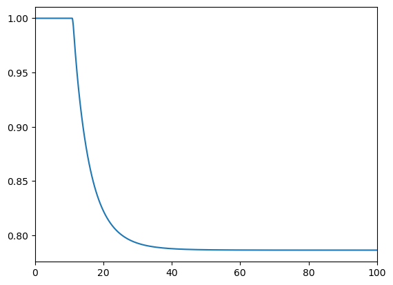
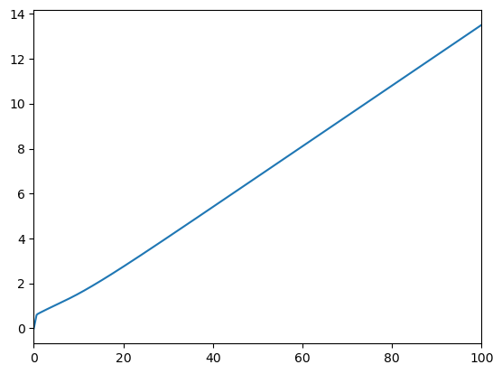
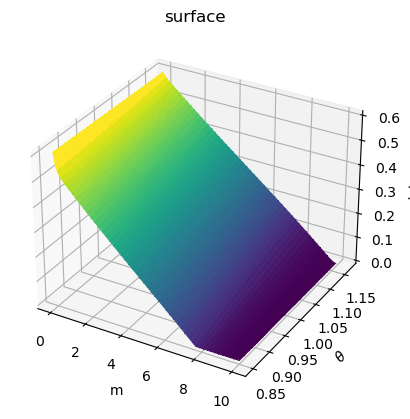
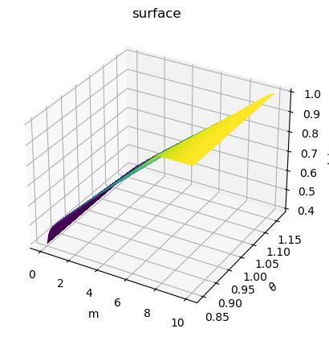
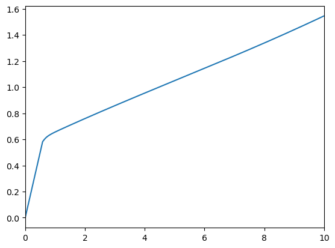

import matplotlib.pyplot as plt
import numpy as np
from ConsLaborPortfolioModel import LaborPortfolioConsumerType
from HARK.utilities import plot_funcs
agent = LaborPortfolioConsumerType()
agent.cycles = 10
def plot_3d_func(func, lims_x, lims_y, n=100, label_x="x", label_y="y", label_z="z"):
# get_ipython().run_line_magic("matplotlib", "widget")
xmin, xmax = lims_x
ymin, ymax = lims_y
xgrid = np.linspace(xmin, xmax, n)
ygrid = np.linspace(ymin, ymax, n)
xMat, yMat = np.meshgrid(xgrid, ygrid, indexing="ij")
zMat = func(xMat, yMat)
ax = plt.axes(projection="3d")
ax.plot_surface(xMat, yMat, zMat, cmap="viridis")
ax.set_title("surface")
ax.set_xlabel(label_x)
ax.set_ylabel(label_y)
ax.set_zlabel(label_z)
plt.show()
agent.solve()
share_func = agent.solution[0].portfolio_stage.share_func
c_func = agent.solution[0].consumption_stage.c_func
labor_func = agent.solution[0].labor_stage.labor_func
leisure_func = agent.solution[0].labor_stage.leisure_func
plot_funcs(share_func, 0, 100)

plot_funcs(c_func, 0, 100)

plot_3d_func(
labor_func,
(0, 10),
[min(agent.TranShkGrid), max(agent.TranShkGrid)],
label_x="m",
label_y=r"$\theta$",
label_z="labor",
)

plot_3d_func(
leisure_func,
(0, 10),
[min(agent.TranShkGrid), max(agent.TranShkGrid)],
label_x="m",
label_y=r"$\theta$",
label_z="leisure",
)

plot_funcs(agent.solution[0].consumption_stage.c_func, 0, 10)
